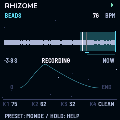

When Day Chokes The Night
Rhizome
Des corps tournent autour d'une étoile et jouent quand ils passent leurs portes. L'espace et le temps, sur un petit synthé.
Ce qu'est Rhizome
Un firmware pour le M-VAVE FM-1, écrit pour le projet ambient When Day Chokes The Night. Il fait l'espace et le temps :
- un séquenceur orbital : la vraie mécanique de Kepler, où une orbite ronde joue un rythme euclidien et une orbite ovale le même rythme avec du rubato. Il a des lunes (ornements), une comète (un événement rare), des conjonctions (accents ou accords) et des systèmes planétaires réels ;
- un delay à bande à trois têtes, avec ses bobines à l'écran ;
- une réverbe HALL, avec ses courbes de décroissance ;
- le granulaire Beads de Mutable Instruments.
Il est complémentaire de Monades, le firmware du premier FM-1, qui fait les notes. Il joue aussi très bien seul.
Le simulateur
Le firmware complet, le même code que sur le FM-1, compilé pour le navigateur. Rien ne joue avant d'appuyer sur « Allumer ». Pour commencer : PRESET sur un Monde, SEQ pour la page ORBIT, K3 pour donner des portes à une piste, puis PLAY. Voir le mode d'emploi.
Chaque animation montre un vrai réglage



Où en est Rhizome
Ne pas installer Rhizome sur un FM-1 pour l'instant. La charge du processeur n'a pas encore été mesurée sur l'appareil. Si elle ne tient pas, Rhizome renoncera à un effet plutôt que de risquer le FM-1.
Sur les épaules de
Kid Bunka / Christoph Link (Mutable Dreams), Émilie Gillet / Mutable Instruments (Plaits, Rings, Elements, Clouds, Beads, stmlib), Charles Vestal (fm1-base), Leo Kuroshita (Felucca). Monades et Rhizome : Dr-John-8bits.
Licence GPL-3.0 ; notices MIT, MPL-2.0 et des polices conservées. Projet indépendant, sans lien avec Mutable Instruments, M-VAVE ni l'auteur de Mutable Dreams.